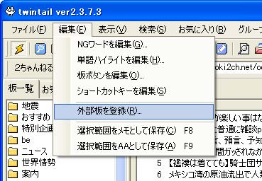
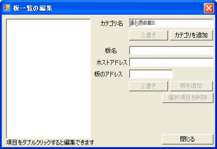
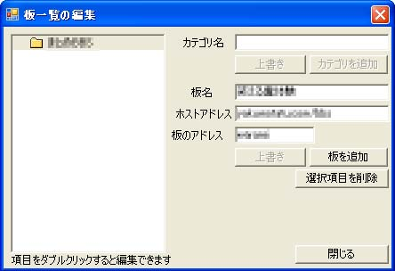
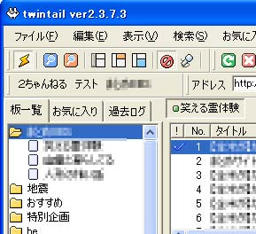

twintailでの設定方法 twintailとOpenTwin
based on twintail（以下OpenTwin）は設定方法が同じなので、twintailで説明します。が、その前にOpenTwinはサイトから別途ダウンロードしたWin2kFix.batをOpenTwinを解凍したフォルダに入れてダブルクリック（Windowsの設定によってはクリックのみでも可）して実行しないとスレッドの閲覧ができません。  「板一覧の編集」ウィンドウが出てきますので、カテゴリ名に「BBS_TITLE」などと適当に入力し「カテゴリを追加」ボタンをクリックします。  カテゴリが追加できましたら、続けて「板名」「ホストアドレス」「板のアドレス」を入力します。設定する値は次のようになります。
複数の板を登録する場合はウィンドウを閉じずに連続して作業をした方が楽です。  全ての板を登録したら「閉じる」ボタンをクリックします。  レスの書き込みや新規のスレ立ては普通にできます。 |